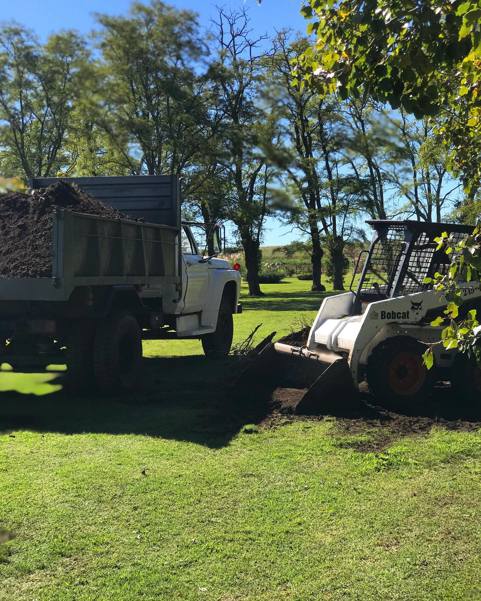

Somos una empresa de Tandil provincia de Buenos Aires Realizamos el movimiento de grandes volúmenes de suelos como parte de la preparación y moldeado del terreno Dentro del movimiento de terreno se engloban varias etapas como los trabajos de replanteo, despeje y desbroce, nivelados o desmontes Los equipos utilizados generalmente para este tipo de proyectos son: Minipala, Retroexcavadora y Motoniveladora

PS Movimientos de suelo
